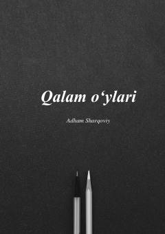

QOFalastinlik yozuvchi Adham Sharqoviyning hayotiy hikmatlar va o'y-fikrlari to'plami.
Ushbu kitob falastinlik yosh yozuvchi Adham Sharqoviyning hayotiy kuzatishlari, qisqa va mazmunli o'y-fikrlari jamlanmasidan iborat. Muallif o'zining dunyoqarashlari, jamiyat va insoniy munosabatlar haqidagi mulohazalarini qalam orqali samimiy va ta'sirli tarzda ifodalagan. Asar kitobxonlarni hayot mazmuni va axloqiy qadriyatlar haqida fikrlashga undaydi.